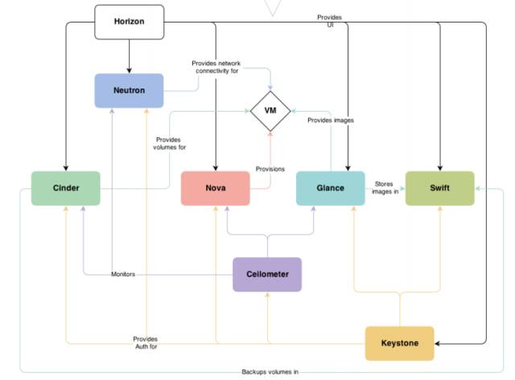
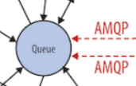

第二篇nova— 计算服务
一、nova介绍：
Nova 是 OpenStack 最核心的服务，负责维护和管理云环境的计算资源。OpenStack 作为 IaaS 的云操作系统，虚拟机生命周期管理也就是通过 Nova 来实现的。
用途与功能 :
1) 实例生命周期管理
2) 管理计算资源
3) 网络和认证管理
4)REST 风格的 API
5) 异步的一致性通信
6)Hypervisor 透明：支持Xen,XenServer/XCP,KVM, UML, VMware vSphere and Hyper-V

在上图中可以看到，Nova 处于 Openstak 架构的中心，其他组件都为 Nova 提供支持： Glance 为 VM 提供 image Cinder 和 Swift 分别为 VM 提供块存储和对象存储 Neutron 为 VM 提供网络连接。
Nova 架构如下：
Nova 的架构比较复杂，包含很多组件。 这些组件以子服务（后台 deamon 进程）的形式运行，可以分为以下几类：
API
nova-api
是整个 Nova 组件的门户，接收和响应客户的 API 调用。所有对 Nova 的请求都首先由 nova-api 处理。nova-api 向外界暴露若干 HTTP REST API 接口 在 keystone 中我们可以查询 nova-api 的 endponits。
客户端就可以将请求发送到 endponits 指定的地址，向 nova-api 请求操作。 当然，作为最终用户的我们不会直接发送 Rest AP I请求。 OpenStack CLI，Dashboard 和其他需要跟 Nova 交换的组件会使用这些 API。
Nova-api 对接收到的 HTTP API 请求会做如下处理：
1. 检查客户端传入的参数是否合法有效
2. 调用 Nova 其他子服务的处理客户端 HTTP 请求
3. 格式化 Nova 其他子服务返回的结果并返回给客户端
nova-api 接收哪些请求？
简单的说，只要是跟虚拟机生命周期相关的操作，nova-api 都可以响应。 大部分操作都可以在 Dashboard 上找到。打开Instance管理界面
除了提供 OpenStack 自己的API，nova-api 还支持 Amazon EC2 API。 也就是说，如果客户以前使用 Amazon EC2，并且用 EC2 的 API 开发了些工具来管理虚机，那么如果现在要换成 OpenStack，这些工具可以无缝迁移到 OpenStack，因为 nova-api 兼容 EC2 API，无需做任何修改。
Compute Core
a）nova-scheduler：
虚机调度服务，负责决定在哪个计算节点上运行虚机。创建 Instance 时，用户会提出资源需求，例如 CPU、内存、磁盘各需要多少。OpenStack 将这些需求定义在 flavor 中，用户只需要指定用哪个 flavor 就可以了。
可用的 flavor 在 System->Flavors 中管理。
下面介绍 nova-scheduler 是如何实现调度的。在 /etc/nova/nova.conf 中，nova 通过 driver=filter_scheduler 这个参数来配置 nova-scheduler。
Filter scheduler
Filter scheduler 是 nova-scheduler 默认的调度器，调度过程分为两步：
1. 通过过滤器（filter）选择满足条件的计算节点（运行 nova-compute）
2. 通过权重计算（weighting）选择在最优（权重值最大）的计算节点上创建 Instance。
Nova 允许使用第三方 scheduler，配置 scheduler_driver 即可。 这又一次体现了OpenStack的开放性。Scheduler 可以使用多个 filter 依次进行过滤，过滤之后的节点再通过计算权重选出最适合的节点。
上图是调度过程的一个示例：
1. 最开始有 6 个计算节点 Host1-Host6
2. 通过多个 filter 层层过滤，Host2 和 Host4 没有通过，被刷掉了
3. Host1，Host3，Host5，Host6 计算权重，结果 Host5 得分最高，最终入选
当 Filter scheduler 需要执行调度操作时，会让 filter 对计算节点进行判断，filter 返回 True 或 False。经过前面一堆 filter 的过滤，nova-scheduler 选出了能够部署 instance 的计算节点。
如果有多个计算节点通过了过滤，那么最终选择哪个节点呢？
Scheduler 会对每个计算节点打分，得分最高的获胜。 打分的过程就是 weight，翻译过来就是计算权重值，那么 scheduler 是根据什么来计算权重值呢？
目前 nova-scheduler 的默认实现是根据计算节点空闲的内存量计算权重值： 空闲内存越多，权重越大，instance 将被部署到当前空闲内存最多的计算节点上。
b）nova-compute：
nova-compute 是管理虚机的核心服务，在计算节点上运行。通过调用Hypervisor API实现节点上的 instance的生命周期管理。 OpenStack 对 instance 的操作，最后都是交给 nova-compute 来完成的。 nova-compute 与 Hypervisor 一起实现 OpenStack 对 instance 生命周期的管理。
通过Driver架构支持多种Hypervisor
Hypervisor是计算节点上跑的虚拟化管理程序，虚机管理最底层的程序。 不同虚拟化技术提供自己的 Hypervisor。 常用的 Hypervisor 有 KVM，Xen， VMWare 等。nova-compute 为这些 Hypervisor 定义了统一的接口，Hypervisor 只需要实现这些接口，就可以 Driver 的形式即插即用到 OpenStack 系统中。 下面是Nova Driver的架构示意图：
c）nova-conductor：
nova-compute 经常需要更新数据库，比如更新和获取虚机的状态。 出于安全性和伸缩性的考虑，nova-compute 并不会直接访问数据库，而是将这个任务委托给 nova-conductor。
这样做有两个显著好处：
1. 更高的系统安全性
2. 更好的系统伸缩性
Console Interface
nova-console： 用户可以通过多种方式访问虚机的控制台：
nova-novncproxy： 基于 Web 浏览器的 VNC 访问
nova-spicehtml5proxy： 基于 HTML5 浏览器的 SPICE 访问
nova-xvpnvncproxy： 基于 Java 客户端的 VNC 访问
nova-consoleauth： 负责对访问虚机控制台请求提供 Token 认证
Database
Nova 会有一些数据需要存放到数据库中，一般使用 MySQL。数据库安装在控制节点上。 Nova 使用命名为 “nova” 的数据库。
Message Queue
在前面我们了解到 Nova 包含众多的子服务，这些子服务之间需要相互协调和通信。为解耦各个子服务，Nova 通过 Message Queue 作为子服务的信息中转站。 所以在架构图上我们看到了子服务之间没有直接的连线，是通过 Message Queue 联系的。

OpenStack 默认是用 RabbitMQ 作为 Message Queue。 MQ 是 OpenStack 的核心基础组件，我们后面也会详细介绍。
二、Nova 组件如何协同工作
Nova 物理部署方案
前面大家已经看到 Nova 由很多子服务组成，我们也知道 OpenStack 是一个分布式系统，可以部署到若干节点上，那么接下来大家可能就会问：Nova 的这些服务在物理上应该如何部署呢？
对于 Nova，这些服务会部署在两类节点上：计算节点和控制节点。
计算节点上安装了 Hypervisor，上面运行虚拟机。 由此可知：
1. 只有 nova-compute 需要放在计算节点上。
2. 其他子服务则是放在控制节点上的。
下面我们可以看看实验环境的具体部署情况。 通过在计算节点和控制节点上运行
ps -elf | grep nova 来查看运行的 nova 子服务
计算节点compute只运行了nova-compute子服务
控制节点controller运行了若干nova-*子服务
RabbitMQ 和 MySQL 也是放在控制节点上的。可能细心的同学已经发现我们的控制节点上也运行了 nova-compute。 这实际上也就意味着 devstack-controller 既是一个控制节点，同时也是一个计算节点，也可以在上面运行虚机。
这也向我们展示了 OpenStack 这种分布式架构部署上的灵活性： 可以将所有服务都放在一台物理机上，作为一个 All-in-One 的测试环境； 也可以将服务部署在多台物理机上，获得更好的性能和高可用。
另外，也可以用 nova service-list 查看 nova-* 子服务都分布在哪些节点上
从虚机创建流程看 nova-* 子服务如何协同工作
从学习 Nova 的角度看，虚机创建是一个非常好的场景，涉及的 nova-* 子服务很全，下面是流程图。
客户（可以是 OpenStack 最终用户，也可以是其他程序）向 API（nova-api）发送请求：“帮我创建一个虚机”
API 对请求做一些必要处理后，向 Messaging（RabbitMQ）发送了一条消息：“让 Scheduler 创建一个虚机”
Scheduler（nova-scheduler）从 Messaging 获取到 API 发给它的消息，然后执行调度算法，从若干计算节点中选出节点 A
Scheduler 向 Messaging 发送了一条消息：“在计算节点 A 上创建这个虚机”
计算节点 A 的 Compute（nova-compute）从 Messaging 中获取到 Scheduler 发给它的消息，然后在本节点的 Hypervisor 上启动虚机。
在虚机创建的过程中，Compute 如果需要查询或更新数据库信息，会通过 Messaging 向 Conductor（nova-conductor）发送消息，Conductor 负责数据库访问。
以上是创建虚机最核心的步骤， 这几个步骤向我们展示了 nova-* 子服务之间的协作的方式，也体现了 OpenStack 整个系统的分布式设计思想，掌握这种思想对我们深入理解 OpenStack 会非常有帮助。